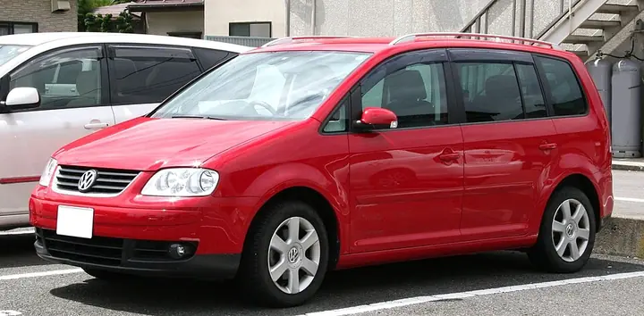
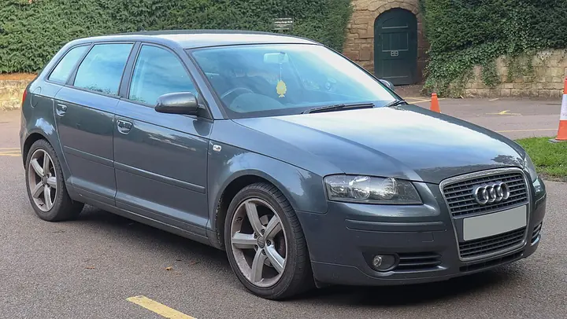
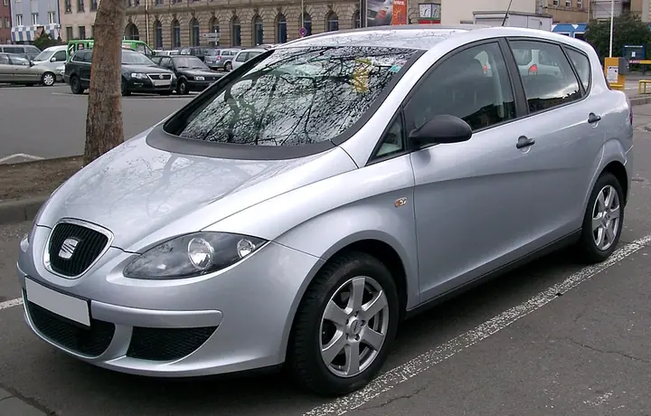
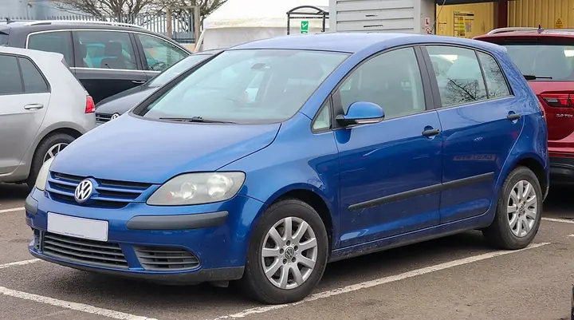
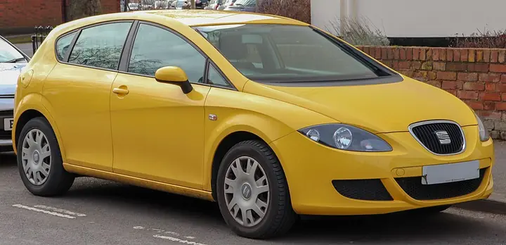
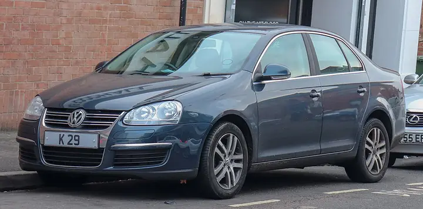
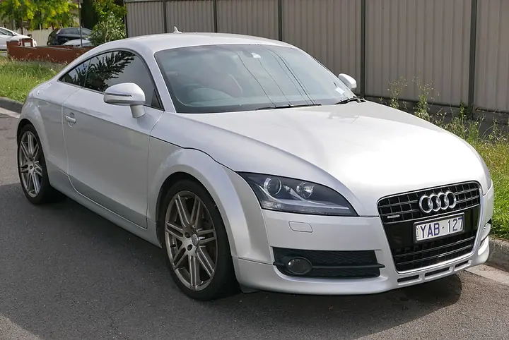
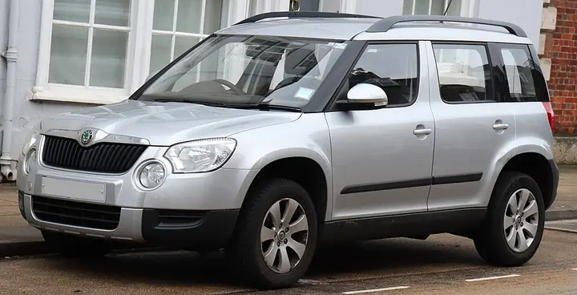
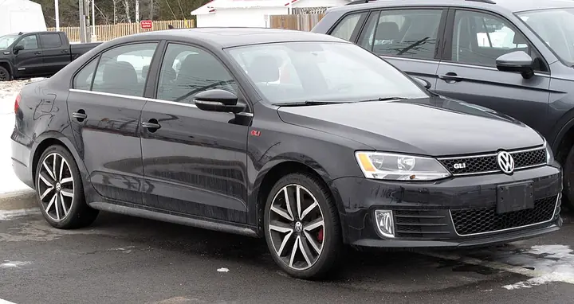
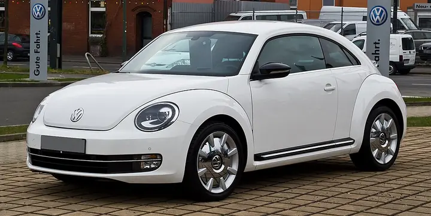

Platform
Volkswagen Group A5 (PQ35)
19 generations of 16 models by Volkswagen, Audi, SEAT and Škoda, 2002–2019.
The cars

Volkswagen Touran · First generation (Typ 1T; 2003)
Audi A3 · Second generation (Typ 8P; 2003) Volkswagen Golf · Fifth generation (Mk5/A5, Typ 1K; 2003)
Volkswagen Golf · Fifth generation (Mk5/A5, Typ 1K; 2003) Volkswagen Golf Mk5
Volkswagen Golf Mk5 SEAT Altea
SEAT Altea
SEAT Toledo · Third generation (Typ 5P; 2004)
Volkswagen Golf Plus- Škoda Octavia · Second generation (Typ 1Z; 2004)

SEAT León · Second generation (1P; 2005) Volkswagen Jetta · Fifth generation (A5, Typ 1K5; 2005)
Volkswagen Jetta · Fifth generation (A5, Typ 1K5; 2005)
Volkswagen Sagitar · First generation (A5, Typ 1K5; 2006)
Audi TT · TT Mk2 (Type 8J, 2006–2014)- Volkswagen Golf · Sixth generation (Mk6/A6, Typ 5K; 2008)
- Volkswagen Golf Mk6

Škoda Yeti
Volkswagen Jetta · Sixth generation (A6, Typ 5C6; 2010) Volkswagen Sagitar · Second generation (A6, Typ 5C6; 2012)
Volkswagen Sagitar · Second generation (A6, Typ 5C6; 2012) Audi Q3 · First generation (Typ 8U; 2011)
Audi Q3 · First generation (Typ 8U; 2011)
Volkswagen Beetle · Volkswagen Beetle (A5)